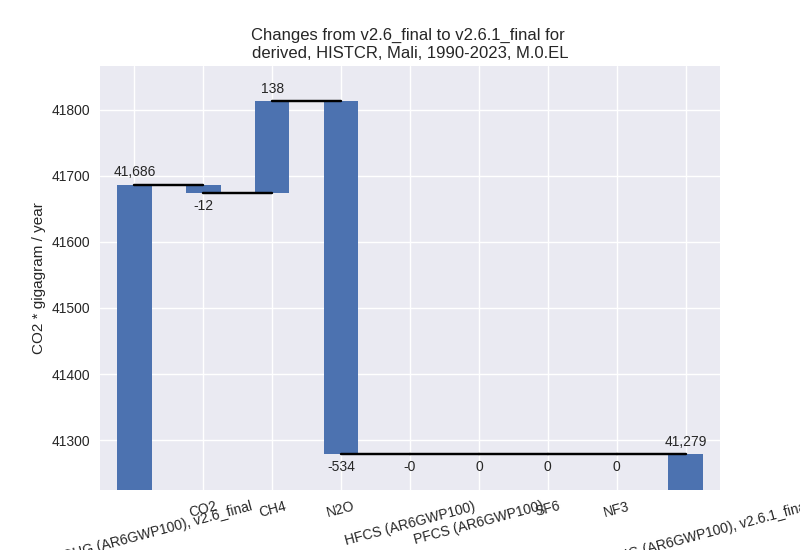
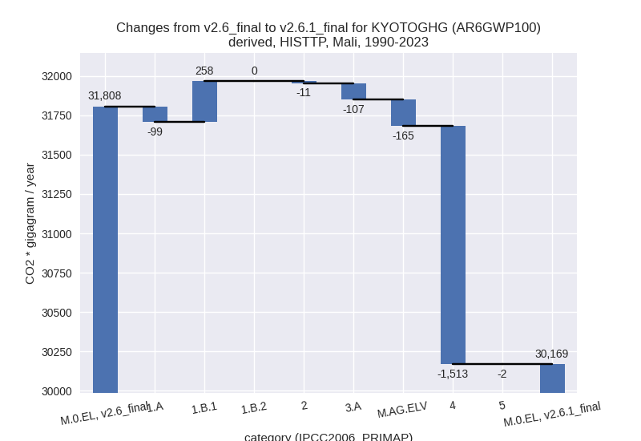
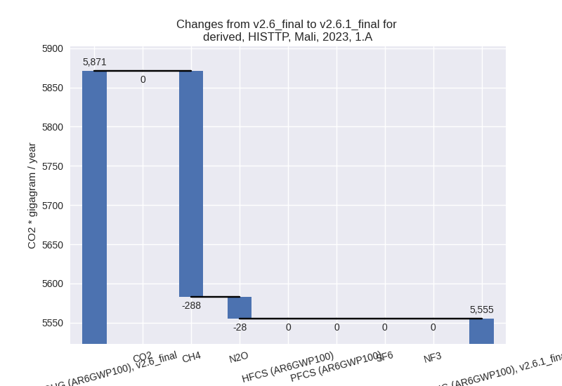

Changes in PRIMAP-hist v2.6.1_final compared to v2.6_final for Mali
2025-03-19
Johannes Gütschow
Change analysis for Mali for PRIMAP-hist v2.6.1_final compared to v2.6_final
Overview over emissions by sector and gas
The following figures show the aggregate national total emissions excluding LULUCF AR6GWP100 for the country reported priority scenario. The dotted linesshow the v2.6_final data.
The following figures show the aggregate national total emissions excluding LULUCF AR6GWP100 for the third party priority scenario. The dotted linesshow the v2.6_final data.
Overview over changes
In the country reported priority scenario we have the following changes for aggregate Kyoto GHG and national total emissions excluding LULUCF (M.0.EL):
- Emissions in 2023 have changed by -9.8%% (-8702.05 Gg CO2 / year)
- Emissions in 1990-2023 have changed by -1.0%% (-407.30 Gg CO2 / year)
In the third party priority scenario we have the following changes for aggregate Kyoto GHG and national total emissions excluding LULUCF (M.0.EL):
- Emissions in 2023 have changed by -11.2%% (-6190.18 Gg CO2 / year)
- Emissions in 1990-2023 have changed by -5.2%% (-1639.05 Gg CO2 / year)
Most important changes per scenario and time frame
In the country reported priority scenario the following sector-gas combinations have the highest absolute impact on national total KyotoGHG (AR6GWP100) emissions in 2023 (top 5):
- 1: M.AG.ELV, N2O with -7321.35 Gg CO2 / year (-14.6%)
- 2: 3.A, CH4 with -1969.77 Gg CO2 / year (-8.1%)
- 3: 1.B.1, CH4 with 985.10 Gg CO2 / year (1170.3%)
- 4: M.AG.ELV, CH4 with -213.01 Gg CO2 / year (-5.9%)
- 5: 1.A, N2O with -175.26 Gg CO2 / year (-10.6%)
In the country reported priority scenario the following sector-gas combinations have the highest absolute impact on national total KyotoGHG (AR6GWP100) emissions in 1990-2023 (top 5):
- 1: M.AG.ELV, N2O with -484.96 Gg CO2 / year (-2.4%)
- 2: 1.B.1, CH4 with 254.90 Gg CO2 / year (181.9%)
- 3: 3.A, CH4 with -108.02 Gg CO2 / year (-0.8%)
- 4: 1.A, N2O with -48.84 Gg CO2 / year (-6.7%)
- 5: M.AG.ELV, CH4 with -12.09 Gg CO2 / year (-0.5%)
In the third party priority scenario the following sector-gas combinations have the highest absolute impact on national total KyotoGHG (AR6GWP100) emissions in 2023 (top 5):
- 1: 4, CH4 with -2446.72 Gg CO2 / year (-64.7%)
- 2: M.AG.ELV, N2O with -2210.88 Gg CO2 / year (-14.6%)
- 3: 3.A, CH4 with -1937.04 Gg CO2 / year (-8.1%)
- 4: 1.B.1, CH4 with 985.10 Gg CO2 / year (1170.3%)
- 5: 1.A, CH4 with -287.64 Gg CO2 / year (-34.1%)
In the third party priority scenario the following sector-gas combinations have the highest absolute impact on national total KyotoGHG (AR6GWP100) emissions in 1990-2023 (top 5):
- 1: 4, CH4 with -1512.71 Gg CO2 / year (-67.0%)
- 2: 1.B.1, CH4 with 254.90 Gg CO2 / year (181.9%)
- 3: M.AG.ELV, N2O with -148.20 Gg CO2 / year (-1.7%)
- 4: 3.A, CH4 with -106.23 Gg CO2 / year (-0.8%)
- 5: 1.A, CH4 with -90.09 Gg CO2 / year (-13.9%)
Notes on data changes
Here we list notes explaining important emissions changes for the country.
- No new country reported data has been included.
- Changes in the agricultural sectors are due to a decrease in emissions in FAO data for 2022 which does not follow the longer term trend used in v2.6.
- The very high emissions change in 1.B.1 (CH4) comes directly from the new EDGAR data.
- In the TP scenario the changes are for similar sectors with the addition of a high reduction of waste CH4 emissions from EDGAR data.
Changes by sector and gas
For each scenario and time frame the changes are displayed for all individual sectors and all individual gases. In the sector plot we use aggregate Kyoto GHGs in AR6GWP100. In the gas plot we usenational total emissions without LULUCF.
country reported scenario
2023
1990-2023

third party scenario
2023
1990-2023

Detailed changes for the scenarios:
country reported scenario (HISTCR):
Most important changes per time frame
For 2023 the following sector-gas combinations have the highest absolute impact on national total KyotoGHG (AR6GWP100) emissions in 2023 (top 5):
- 1: M.AG.ELV, N2O with -7321.35 Gg CO2 / year (-14.6%)
- 2: 3.A, CH4 with -1969.77 Gg CO2 / year (-8.1%)
- 3: 1.B.1, CH4 with 985.10 Gg CO2 / year (1170.3%)
- 4: M.AG.ELV, CH4 with -213.01 Gg CO2 / year (-5.9%)
- 5: 1.A, N2O with -175.26 Gg CO2 / year (-10.6%)
For 1990-2023 the following sector-gas combinations have the highest absolute impact on national total KyotoGHG (AR6GWP100) emissions in 1990-2023 (top 5):
- 1: M.AG.ELV, N2O with -484.96 Gg CO2 / year (-2.4%)
- 2: 1.B.1, CH4 with 254.90 Gg CO2 / year (181.9%)
- 3: 3.A, CH4 with -108.02 Gg CO2 / year (-0.8%)
- 4: 1.A, N2O with -48.84 Gg CO2 / year (-6.7%)
- 5: M.AG.ELV, CH4 with -12.09 Gg CO2 / year (-0.5%)
Changes in the main sectors for aggregate KyotoGHG (AR6GWP100) are
- 1: Total sectoral emissions in 2022 are 9097.14 Gg
CO2 / year which is 11.5% of M.0.EL emissions. 2023 Emissions have
changed by 9.7% (787.06 Gg CO2 /
year). 1990-2023 Emissions have changed by 5.0% (202.25 Gg CO2 / year). For 2023 the
changes per gas
are:
For 1990-2023 the changes per gas are:
The changes come from the following subsectors:- 1.A: Total sectoral emissions in 2022 are 8013.68
Gg CO2 / year which is 88.1% of category 1 emissions. 2023 Emissions
have changed by -2.6% (-211.11 Gg
CO2 / year). 1990-2023 Emissions have changed by -1.4% (-56.03 Gg CO2 / year). For 2023 the
changes per gas
are:

There is no subsector information available in PRIMAP-hist. - 1.B.1: Total sectoral emissions in 2022 are 1083.46
Gg CO2 / year which is 11.9% of category 1 emissions. 2023 Emissions
have changed by 1170.3% (998.16 Gg
CO2 / year). 1990-2023 Emissions have changed by 181.9% (258.28 Gg CO2 / year). For 2023
the changes per gas
are:
For 1990-2023 the changes per gas are:
There is no subsector information available in PRIMAP-hist. - 1.B.2: Total sectoral emissions in 2022 are 0.00 Gg
CO2 / year which is 0.0% of category 1 emissions. 2023 Emissions have
changed by 93.3% (0.00 Gg CO2 /
year). 1990-2023 Emissions have changed by 19.8% (0.00 Gg CO2 / year). For 2023 the
changes per gas
are:
For 1990-2023 the changes per gas are:
There is no subsector information available in PRIMAP-hist.
- 1.A: Total sectoral emissions in 2022 are 8013.68
Gg CO2 / year which is 88.1% of category 1 emissions. 2023 Emissions
have changed by -2.6% (-211.11 Gg
CO2 / year). 1990-2023 Emissions have changed by -1.4% (-56.03 Gg CO2 / year). For 2023 the
changes per gas
are:
- 2: Total sectoral emissions in 2022 are 1360.01 Gg
CO2 / year which is 1.7% of M.0.EL emissions. 2023 Emissions have
changed by -1.1% (-16.20 Gg CO2 /
year). 1990-2023 Emissions have changed by -2.8% (-11.26 Gg CO2 / year). For
1990-2023 the changes per gas
are:
- M.AG: Total sectoral emissions in 2022 are 67253.34
Gg CO2 / year which is 85.1% of M.0.EL emissions. 2023 Emissions have
changed by -12.2% (-9493.40 Gg CO2 /
year). 1990-2023 Emissions have changed by -1.7% (-606.39 Gg CO2 / year). For 2023
the changes per gas
are:

The changes come from the following subsectors:- 3.A: Total sectoral emissions in 2022 are 21879.59
Gg CO2 / year which is 32.5% of category M.AG emissions. 2023 Emissions
have changed by -8.1% (-1978.08 Gg
CO2 / year). 1990-2023 Emissions have changed by -0.8% (-108.47 Gg CO2 / year). For 2023
the changes per gas
are:
There is no subsector information available in PRIMAP-hist. - M.AG.ELV: Total sectoral emissions in 2022 are
45373.75 Gg CO2 / year which is 67.5% of category M.AG emissions. 2023
Emissions have changed by -14.0%
(-7515.32 Gg CO2 / year). 1990-2023 Emissions have changed by -2.1% (-497.92 Gg CO2 / year). For 2023
the changes per gas
are:
For 1990-2023 the changes per gas are:
There is no subsector information available in PRIMAP-hist.
- 3.A: Total sectoral emissions in 2022 are 21879.59
Gg CO2 / year which is 32.5% of category M.AG emissions. 2023 Emissions
have changed by -8.1% (-1978.08 Gg
CO2 / year). 1990-2023 Emissions have changed by -0.8% (-108.47 Gg CO2 / year). For 2023
the changes per gas
are:
- 4: Total sectoral emissions in 2022 are 962.72 Gg
CO2 / year which is 1.2% of M.0.EL emissions. 2023 Emissions have
changed by 5.5% (51.99 Gg CO2 /
year). 1990-2023 Emissions have changed by 1.9% (10.37 Gg CO2 / year). For 2023 the
changes per gas
are:
- 5: Total sectoral emissions in 2022 are 343.83 Gg
CO2 / year which is 0.4% of M.0.EL emissions. 2023 Emissions have
changed by -8.5% (-31.50 Gg CO2 /
year). 1990-2023 Emissions have changed by -0.8% (-2.28 Gg CO2 / year). For 2023 the
changes per gas
are:
third party scenario (HISTTP):
Most important changes per time frame
For 2023 the following sector-gas combinations have the highest absolute impact on national total KyotoGHG (AR6GWP100) emissions in 2023 (top 5):
- 1: 4, CH4 with -2446.72 Gg CO2 / year (-64.7%)
- 2: M.AG.ELV, N2O with -2210.88 Gg CO2 / year (-14.6%)
- 3: 3.A, CH4 with -1937.04 Gg CO2 / year (-8.1%)
- 4: 1.B.1, CH4 with 985.10 Gg CO2 / year (1170.3%)
- 5: 1.A, CH4 with -287.64 Gg CO2 / year (-34.1%)
For 1990-2023 the following sector-gas combinations have the highest absolute impact on national total KyotoGHG (AR6GWP100) emissions in 1990-2023 (top 5):
- 1: 4, CH4 with -1512.71 Gg CO2 / year (-67.0%)
- 2: 1.B.1, CH4 with 254.90 Gg CO2 / year (181.9%)
- 3: M.AG.ELV, N2O with -148.20 Gg CO2 / year (-1.7%)
- 4: 3.A, CH4 with -106.23 Gg CO2 / year (-0.8%)
- 5: 1.A, CH4 with -90.09 Gg CO2 / year (-13.9%)
Changes in the main sectors for aggregate KyotoGHG (AR6GWP100) are
- 1: Total sectoral emissions in 2022 are 6790.47 Gg
CO2 / year which is 14.1% of M.0.EL emissions. 2023 Emissions have
changed by 11.5% (682.33 Gg CO2 /
year). 1990-2023 Emissions have changed by 5.1% (159.35 Gg CO2 / year). For 2023 the
changes per gas
are:
For 1990-2023 the changes per gas are:
The changes come from the following subsectors:- 1.A: Total sectoral emissions in 2022 are 5707.01
Gg CO2 / year which is 84.0% of category 1 emissions. 2023 Emissions
have changed by -5.4% (-315.83 Gg
CO2 / year). 1990-2023 Emissions have changed by -3.3% (-98.93 Gg CO2 / year). For 2023 the
changes per gas
are:

For 1990-2023 the changes per gas are:
There is no subsector information available in PRIMAP-hist. - 1.B.1: Total sectoral emissions in 2022 are 1083.46
Gg CO2 / year which is 16.0% of category 1 emissions. 2023 Emissions
have changed by 1170.3% (998.16 Gg
CO2 / year). 1990-2023 Emissions have changed by 181.9% (258.28 Gg CO2 / year). For 2023
the changes per gas
are:
For 1990-2023 the changes per gas are:
There is no subsector information available in PRIMAP-hist. - 1.B.2: Total sectoral emissions in 2022 are 0.00 Gg
CO2 / year which is 0.0% of category 1 emissions. 2023 Emissions have
changed by 93.3% (0.00 Gg CO2 /
year). 1990-2023 Emissions have changed by 19.8% (0.00 Gg CO2 / year). For 2023 the
changes per gas
are:
For 1990-2023 the changes per gas are:
There is no subsector information available in PRIMAP-hist.
- 1.A: Total sectoral emissions in 2022 are 5707.01
Gg CO2 / year which is 84.0% of category 1 emissions. 2023 Emissions
have changed by -5.4% (-315.83 Gg
CO2 / year). 1990-2023 Emissions have changed by -3.3% (-98.93 Gg CO2 / year). For 2023 the
changes per gas
are:
- 2: Total sectoral emissions in 2022 are 1360.01 Gg
CO2 / year which is 2.8% of M.0.EL emissions. 2023 Emissions have
changed by -1.1% (-16.20 Gg CO2 /
year). 1990-2023 Emissions have changed by -2.8% (-11.26 Gg CO2 / year). For
1990-2023 the changes per gas
are:
- M.AG: Total sectoral emissions in 2022 are 38024.49
Gg CO2 / year which is 79.0% of M.0.EL emissions. 2023 Emissions have
changed by -10.1% (-4377.07 Gg CO2 /
year). 1990-2023 Emissions have changed by -1.1% (-271.77 Gg CO2 / year). For 2023
the changes per gas
are:
The changes come from the following subsectors:- 3.A: Total sectoral emissions in 2022 are 21517.72
Gg CO2 / year which is 56.6% of category M.AG emissions. 2023 Emissions
have changed by -8.1% (-1945.34 Gg
CO2 / year). 1990-2023 Emissions have changed by -0.8% (-106.68 Gg CO2 / year). For 2023
the changes per gas
are:
There is no subsector information available in PRIMAP-hist. - M.AG.ELV: Total sectoral emissions in 2022 are
16506.77 Gg CO2 / year which is 43.4% of category M.AG emissions. 2023
Emissions have changed by -12.6%
(-2431.73 Gg CO2 / year). 1990-2023 Emissions have changed by -1.3% (-165.10 Gg CO2 / year). For 2023
the changes per gas
are:
There is no subsector information available in PRIMAP-hist.
- 3.A: Total sectoral emissions in 2022 are 21517.72
Gg CO2 / year which is 56.6% of category M.AG emissions. 2023 Emissions
have changed by -8.1% (-1945.34 Gg
CO2 / year). 1990-2023 Emissions have changed by -0.8% (-106.68 Gg CO2 / year). For 2023
the changes per gas
are:
- 4: Total sectoral emissions in 2022 are 1588.77 Gg
CO2 / year which is 3.3% of M.0.EL emissions. 2023 Emissions have
changed by -59.9% (-2447.74 Gg CO2 /
year). 1990-2023 Emissions have changed by -61.8% (-1513.10 Gg CO2 / year). For 2023
the changes per gas
are:
For 1990-2023 the changes per gas are: - 5: Total sectoral emissions in 2022 are 343.83 Gg
CO2 / year which is 0.7% of M.0.EL emissions. 2023 Emissions have
changed by -8.5% (-31.50 Gg CO2 /
year). 1990-2023 Emissions have changed by -0.8% (-2.28 Gg CO2 / year). For 2023 the
changes per gas
are: